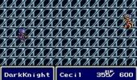
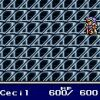
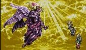

| home | projects | opinions | contact |
| ray lc : opinions : games |
|
(1) Final Fantasy VIII. FF8 dared to go beyond the dramatic game to the epic romance game, and is the most detailed and subtle work ever designed for the intelligent gamer. |
|  |
(2) Final Fantasy IV. FF4 is the first modern game with complex personalities and mythologies, blending multiple genres like sci-fi, adventure, history, and romance. |  |
|
(3) Final Fantasy VII. FF7 is the first psychological drama played out as a game, and showed that a main protagonist can be prematurely killed just as in Hitchcock's Psycho. |
|
(4) Final Fantasy X. FF10 concerns physical manifestations of dreams, and the eternal recurrence of both thoughts and the persons in different generations who think them. |
|  |
(5) Final Fantasy VI. FF6 is analogous to Robert Altman's Nashville: lots of characters with individual stories and one enormous climax, though in the middle here. |
| up | top |